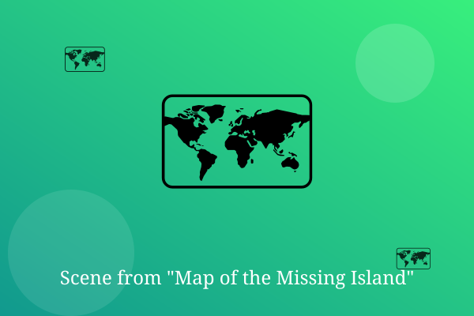

Chapter 1: X Marks Nothing

The map fell out of a library book that nobody had borrowed in fifty years. In the corner, someone had written 'Do not follow.'
Of course, Ian, Pia, and Cole followed it. They borrowed a boat, packed sandwiches, and sailed at dawn.
By noon the sea turned glass-green, and a small island rose out of the mist exactly where X marked nothing.
— End of Chapter —